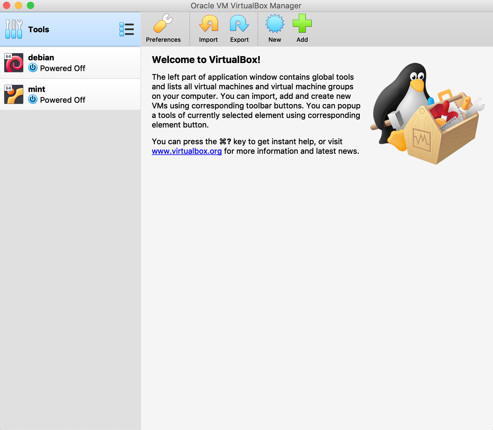
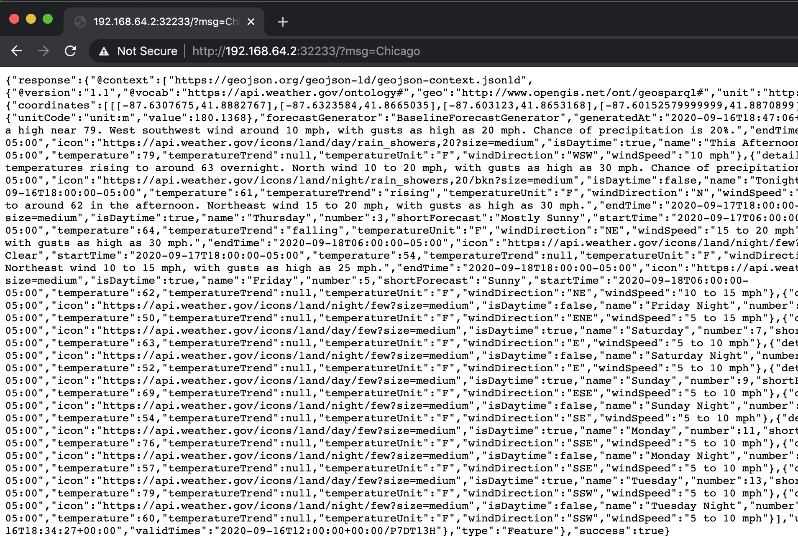

Kubernetes
Caveat: Unless we have a truly massive or complex system, we probably don’t need Kubernetes, and using it should be the result of a deliberate cost benefit analysis in comparison to other hosted solutions or managed solutions.
Introduction
- Kubernetes is an open-source system for automating deployment, scaling, and management of containerized applications.
- It was open-sourced by Google. Its predecessor was called
borginternally. - Kubernetes, or K8s for short, is a central orchestration system in large complex software systems.
- It coordinates a collection or cluster of computers with the purpose of working as a single unit.
- When we orchestrate containers with it, we are agnostic to which computer runs which container.
K8s takes care of scheduling and distribution of containers to these unnamed computers behind the scenes.
We will primarily be interested in ML model deployment.
Lets start by going over some of the key concepts in the K8s container orchestration system below. For more information, have a look at the basics documented at https://kubernetes.io/docs/tutorials/kubernetes-basics/ and go from there.
A K8s cluster has two resources:
- Master: coordinator of the cluster
- Nodes: workers are essentially VMs or computers that run containers.

Each node runs
kubeletthat manages it and communicated with the master. It also runs Docker daemon (or other technologies) to manage containers.The deploy sequence essentially involves the following:
kubectltells the master to start application containers.- Master schedules containers to run.
Deployment
- Once we have a cluster running, we can deploy containerized applications (one or many) using a Deployment configuration.
- We can think of this as a set of instructions to K8s to set up the application on the cluster. Essentially, the containers are mapped to individual nodes.
After the mapping, a Deployment Controller keeps checking these instances allowing for self-healing.

We create a deployment using a tool such as
kubectlthat uses an API to interact with the Master.When creating a deployment, we need to specify container images as well as the number of copies of each image we want to instantiate.
Nodes and Pods
- When an app is deployed as a container, it is encapsulated in a pod on a specific node.
- A pod is a collection of containers that share a few things (see below) and are typically related to each other.
- Storage
- Networking and IP address
- These related containers can be a web server and a database for instance.
- We can also have a single container in a pod (this is what we will do here).
- Pods are the most basic unit in K8s. It is pods that are created and destroyed, not individual containers.

- A node is essentially a VM/machine and can have multiple pods (depending on how K8s schedules pods). A node runs:
- Kubelet: a program that communicates between the master and the node and manages the pods on the node.
- Docker daemon (or equivalent) for pulling and running containers from images.

Services
A Kubernetes Service is an abstraction layer which defines a logical set of Pods and enables external traffic exposure, load balancing and service discovery for those Pods.
- It enables coupling between pods (each of which have a unique IP).
- The pods with IPs cannot be typically accessed from the outside. Instead, a service can be used to allow external connections.
For example, a service with a spec that says
NodePortexposed pods on the same port of each selected node in the cluster using NAT (Network Address Translation). We will see an example while deploying our model.
The Service abstraction lets pods get deleted and replicated in the cluster with no influence on our app.
A set of pods are matched to a service using labels and selectors. See https://kubernetes.io/docs/tutorials/kubernetes-basics/expose/expose-intro/ for more information.
Scaling and Updating
See https://kubernetes.io/docs/tutorials/kubernetes-basics/scale/scale-intro/ for how an app can scale.
See https://kubernetes.io/docs/tutorials/kubernetes-basics/update/update-intro/ for information on how to perform a rolling update.
Installing kubectl, minikube, Virtualbox and Docker
- We have already installed Docker for Desktop.
Virtualbox
Virtualbox is a software product for running virtual machines on a variety of host operating systems (MacOS/Windows/Linux).
Go to https://www.virtualbox.org/ and download the installer for your OS. The installation is straightforward.
Once installed, try to download a Linux distribution such as Debian or Fedora to try out how Virtualbox works.

Kubectl
kubectlis a client utility to talk to the the K8s server for container orchestration.Download
kubectlfrom this page. Here is the example command for MacOS:(datasci-dev) ttmac:k8s theja$ curl -LO "https://storage.googleapis.com/kubernetes-release/release/$(curl -s https://storage.googleapis.com/kubernetes-release/release/stable.txt)/bin/darwin/amd64/kubectl"Change its permissions to make it executable and move it to a place where it can be on the
$PATH. Check whether you can access it by querying its version information.(datasci-dev) ttmac:k8s theja$ ls -l total 96696 -rw-r--r-- 1 theja staff 49458208 Sep 15 21:18 kubectl (datasci-dev) ttmac:k8s theja$ chmod +x kubectl (datasci-dev) ttmac:k8s theja$ mv kubectl ~/Library/local/bin/ (datasci-dev) ttmac:k8s theja$ kubectl version --client Client Version: version.Info{Major:"1", Minor:"19", GitVersion:"v1.19.1", GitCommit:"206bcadf021e76c27513500ca24182692aabd17e", GitTreeState:"clean", BuildDate:"2020-09-09T11:26:42Z", GoVersion:"go1.15", Compiler:"gc", Platform:"darwin/amd64"}
Minikube
Minikube (
minikube) is a tool that runs a single node K8s cluster in a virtual machine on our local computer. In particular, Minikube is a lightweight K8s implementation that creates a VM on your local machine and deploys a simple cluster containing only one node.Follow the instructions for your operating system at https://kubernetes.io/docs/tasks/tools/install-minikube/. For instance, to install it on MacOS, we do the following.
We check if virtualization is supported. If we run the following command from the terminal, we expect the
VMXacronym to be colored:(datasci-dev) ttmac:k8s theja$ sysctl -a | grep -E --color 'machdep.cpu.features|VMX' machdep.cpu.features: FPU VME DE PSE TSC MSR PAE MCE CX8 APIC SEP MTRR PGE MCA CMOV PAT PSE36 CLFSH DS ACPI MMX FXSR SSE SSE2 SS HTT TM PBE SSE3 PCLMULQDQ DTES64 MON DSCPL VMX EST TM2 SSSE3 CX16 TPR PDCM SSE4.1 SSE4.2 x2APIC POPCNT AES PCID XSAVE OSXSAVE TSCTMR AVX1.0 RDRAND F16CWe will download the stand-alone binary just as we did for
kubectland move it to the right path:(datasci-dev) ttmac:k8s theja$ curl -Lo minikube https://storage.googleapis.com/minikube/releases/latest/minikube-darwin-amd64 % Total % Received % Xferd Average Speed Time Time Time Current Dload Upload Total Spent Left Speed 100 55.5M 100 55.5M 0 0 10.9M 0 0:00:05 0:00:05 --:--:-- 11.7M (datasci-dev) ttmac:k8s theja$ chmod +x minikube (datasci-dev) ttmac:k8s theja$ mv minikube ~/Library/local/bin/Check that its on the path and working correctly by using the following status check:
(datasci-dev) ttmac:k8s theja$ minikube status 🤷 There is no local cluster named "minikube" 👉 To fix this, run: "minikube start" (datasci-dev) ttmac:k8s theja$ minikube version minikube version: v1.13.0 commit: 0c5e9de4ca6f9c55147ae7f90af97eff5befef5f-dirty
Weather Service App
We will run the simple weather service application on K8s using Minikube. It will involve building a Docker image of the flask app, similar to before.
The single node cluster can be started with the following command:
minikube start
You will see the following blurb which ends with ‘Done! kubectl is now configured to use minikube by default’ the first time you run it. You can stop minikube using minikube stop after the whole exercise is done.
(datasci-dev) ttmac:k8s theja$ minikube start
😄 minikube v1.13.0 on Darwin 10.14.6
✨ Automatically selected the hyperkit driver
💾 Downloading driver docker-machine-driver-hyperkit:
> docker-machine-driver-hyperkit.sha256: 65 B / 65 B [---] 100.00% ? p/s 0s
> docker-machine-driver-hyperkit: 10.90 MiB / 10.90 MiB 100.00% 7.97 MiB p
🔑 The 'hyperkit' driver requires elevated permissions. The following commands will be executed:
$ sudo chown root:wheel /Users/theja/.minikube/bin/docker-machine-driver-hyperkit
$ sudo chmod u+s /Users/theja/.minikube/bin/docker-machine-driver-hyperkit
Password:
💿 Downloading VM boot image ...
> minikube-v1.13.0.iso.sha256: 65 B / 65 B [-------------] 100.00% ? p/s 0s
> minikube-v1.13.0.iso: 173.73 MiB / 173.73 MiB [ 100.00% 11.61 MiB p/s 15s
👍 Starting control plane node minikube in cluster minikube
💾 Downloading Kubernetes v1.19.0 preload ...
> preloaded-images-k8s-v6-v1.19.0-docker-overlay2-amd64.tar.lz4: 486.28 MiB
🔥 Creating hyperkit VM (CPUs=2, Memory=4000MB, Disk=20000MB) ...
🐳 Preparing Kubernetes v1.19.0 on Docker 19.03.12 ...
🔎 Verifying Kubernetes components...
🌟 Enabled addons: default-storageclass, storage-provisioner
🏄 Done! kubectl is now configured to use "minikube" by default
If you run the status command, you should see the following:
(datasci-dev) ttmac:k8s theja$ minikube status minikube type: Control Plane host: Running kubelet: Running apiserver: Running kubeconfig: ConfiguredWe can also query the nodes (we only have one) and more information about them as below:
(datasci-dev) ttmac:k8s theja$ kubectl get nodes NAME STATUS ROLES AGE VERSION minikube Ready master 131m v1.19.0 (datasci-dev) ttmac:k8s theja$ kubectl get all NAME TYPE CLUSTER-IP EXTERNAL-IP PORT(S) AGE service/kubernetes ClusterIP 10.96.0.1 <none> 443/TCP 140mAlthough we have the weather_service image (can be viewed by using the
docker imagescommand as long as the Docker daemon is running) in our local repository, we need to access and use the repository specific to Minikube. This can be done using the following two commands:(datasci-dev) ttmac:docker-weather-service theja$ minikube docker-env (datasci-dev) ttmac:docker-weather-service theja$ eval $(minikube -p minikube docker-env)Now if we build the same weather service flask app (recall the corresponding Dockerfile and weather.py from before). This time, we will give a slightly different repository name.
(datasci-dev) ttmac:docker-weather-service theja$ docker build -t weather-service-k8s/latest .The newly created repository is now available in the minikube specific image repository (notice the other images for instance):
(datasci-dev) ttmac:docker-weather-service theja$ docker images REPOSITORY TAG IMAGE ID CREATED SIZE weather-service-k8s/latest latest ae4f44a22535 11 seconds ago 496MB debian buster-slim 052664ad4351 6 days ago 69.2MB gcr.io/k8s-minikube/storage-provisioner v3 bad58561c4be 2 weeks ago 29.7MB k8s.gcr.io/kube-proxy v1.19.0 bc9c328f379c 2 weeks ago 118MB k8s.gcr.io/kube-apiserver v1.19.0 1b74e93ece2f 2 weeks ago 119MB k8s.gcr.io/kube-controller-manager v1.19.0 09d665d529d0 2 weeks ago 111MB k8s.gcr.io/kube-scheduler v1.19.0 cbdc8369d8b1 2 weeks ago 45.7MB k8s.gcr.io/etcd 3.4.9-1 d4ca8726196c 2 months ago 253MB kubernetesui/dashboard v2.0.3 503bc4b7440b 2 months ago 225MB k8s.gcr.io/coredns 1.7.0 bfe3a36ebd25 3 months ago 45.2MB kubernetesui/metrics-scraper v1.0.4 86262685d9ab 5 months ago 36.9MB k8s.gcr.io/pause 3.2 80d28bedfe5d 7 months ago 683kBAlthough there is a local image, we need to set a specific parameter to make kubectl not search for the image elsewhere. In order to do so, we create the following yaml (a data-serialization language thats quite popular to set config parameters and is very tab/space sensitive). See https://en.wikipedia.org/wiki/YAML for more info on yaml files.
The yaml was generated automatically by running the following command and then modified by adding the line
imagePullPolicy: Never:(datasci-dev) ttmac:docker-weather-service theja$ kubectl create deployment weather-minikube --image=weather-service-k8s:latest -o yaml --dry-run=clientapiVersion: apps/v1 kind: Deployment metadata: creationTimestamp: null labels: app: weather-minikube name: weather-minikube spec: replicas: 1 selector: matchLabels: app: weather-minikube strategy: {} template: metadata: creationTimestamp: null labels: app: weather-minikube spec: containers: - image: weather-service-k8s/latest:latest name: weather-service-k8s resources: {} imagePullPolicy: Never status: {}Save the above in a file called.
weather_minikube.yaml. Next we create a new deployment using the minikube cluster.(datasci-dev) ttmac:docker-weather-service theja$ kubectl apply -f weather_minikube.yaml deployment.apps/weather-minikube created (datasci-dev) ttmac:docker-weather-service theja$ kubectl get all NAME READY STATUS RESTARTS AGE pod/weather-minikube-56fd45dd59-zkmmg 1/1 Running 0 71s NAME TYPE CLUSTER-IP EXTERNAL-IP PORT(S) AGE service/kubernetes ClusterIP 10.96.0.1 <none> 443/TCP 160m NAME READY UP-TO-DATE AVAILABLE AGE deployment.apps/weather-minikube 1/1 1 1 71s NAME DESIRED CURRENT READY AGE replicaset.apps/weather-minikube-76cb958c4 1 1 1 71sNext, we will expose this deployment. The option
--type=NodePortspecifies the type of the Service.(datasci-dev) ttmac:docker-weather-service theja$ kubectl expose deployment weather-minikube --type=NodePort --port=5000 service/weather-minikube exposedWe can check that the container is in fact running fine using the following command:
(datasci-dev) ttmac:docker-weather-service theja$ kubectl get pod NAME READY STATUS RESTARTS AGE weather-minikube-56fd45dd59-zkmmg 1/1 Running 0 171mOnce we have verified that the container is running, we can figure out the URL that is being exposed by the system as follows:
(datasci-dev) ttmac:docker-weather-service theja$ minikube service weather-minikube --url http://192.168.64.2:32233We can then access the weather service flask app from the browser and make sure that it works with a few test examples:

We may have to debug our container for various reasons. For instance, it can throw up 500 errors, which correspond to internal server errors due to errors in the python function attached to a URL route in Flask. There are a couple of options:
We can look at the logs (the last argument is the pod name and it has a single container in our example):
kubectl logs weather-minikube-56fd45dd59-zkmmgWe can access the container shell (assuming it has
bashat the appropriate path) by referencing the pod name and try to see which commands are not working:kubectl exec --stdin --tty weather-minikube-56fd45dd59-zkmmg -- /bin/bashFinally, the command
kubectl describealso helps in debugging by showing us detailed information associated with any resource.
Teardown involves the following commands:
(datasci-dev) ttmac:docker-weather-service theja$ kubectl delete services weather-minikube service "weather-minikube" deleted (datasci-dev) ttmac:docker-weather-service theja$ kubectl delete deployment weather-minikube deployment.apps "weather-minikube" deletedWe can then stop and delete the minikube cluster using the
minikube stopandminikube deletecommands:(datasci-dev) ttmac:docker-weather-service theja$ minikube stop ✋ Stopping node "minikube" ... 🛑 1 nodes stopped.Finally, you can delete the cluster using the command
minikube delete.